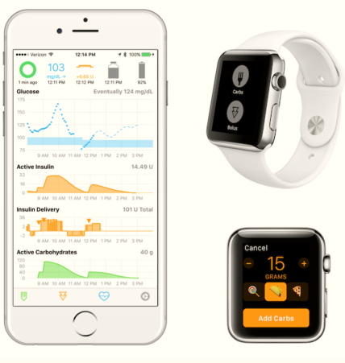
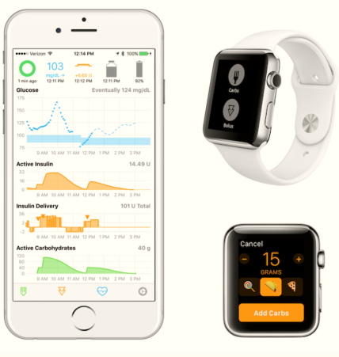

WOMEN WHO CODE
Big Up to all the women who used programming to hack medical devices and enabled their loved ones, themselves, and people living all over the world, to become actors of their condition, to live a better life everyday, and live longer.
Thanks to the Open Source and the #WeAreNotWaiting community, they have made available to those who are ready to take up the challenge, a technology that pharmaceutical companies are taking a long time to develop, and which they are now taking a lead from.
These inspiring women, who are driving innovation by, and for, patients, having designed or helped improve the DIY artificial pancreas, are Dana, Katie, Cal, to name a few.


 
